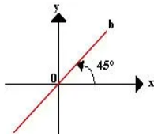
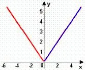
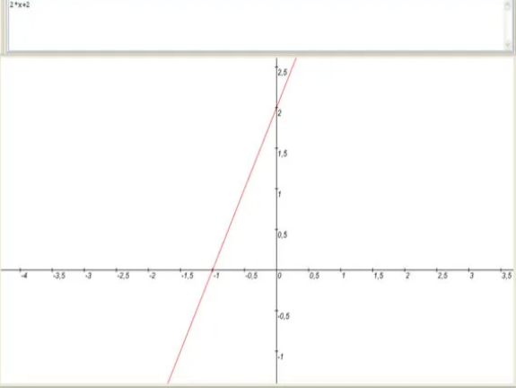
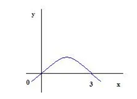
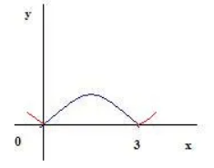

Função é uma lei ou regra que associa cada elemento de um conjunto A a um único elemento de um conjunto B. O conjunto A é chamado de domínio da função e o conjunto B de contradomínio. A função modular é uma função que apresenta o módulo na sua lei de formação.
De maneira mais formal, podemos definir função modular como:
f(X)=|X| ou Y=|X|
A função f(x) = |x| apresenta as seguintes características:
f(x) = x, se x≥ 0
ou
f(x) = – x, se 0>x
Essas características decorrem da definição de módulo.
Exemplo 1. Construa o gráfico da função f(x) = | –x| Solução: primeiro vamos analisar o gráfico da função acima sem a utilização do módulo na sua lei de formação, ou seja, vamos fazer o gráfico de g(x) = – x
O módulo presente na lei da função faz com que a parte do gráfico que se localiza abaixo do eixo x “reflita” no momento em que toca o eixo x. Mas por quê? Simples, a parte do gráfico abaixo do eixo x representa os valores negativos de y e, como o módulo de um número é sempre um valor positivo, o gráfico de f(x) = |– x| fica:
A parte do gráfico que está azul é parte que sofreu ação do módulo.
Exemplo 2. Construa o gráfico da função f(x) = |x2 – 3x| Solução: pela definição de módulo, temos que:
f(x) = x2 – 3x, se x≥ 0
e
f(x) = – (x2 – 3x), se 0>x
Daí, segue que:
x2 – 3x = 0
x = 0 ou x = 3, logo :
Temos também que: – (x2 – 3x) = 0, x = 0 ou x = 3
Daí, segue que:
Unindo as partes dos dois gráficos que se encontram acima do eixo x teremos o gráfico da função f(x) = |x2 – 3x|
 ← Página Anterior Página Seguinte →